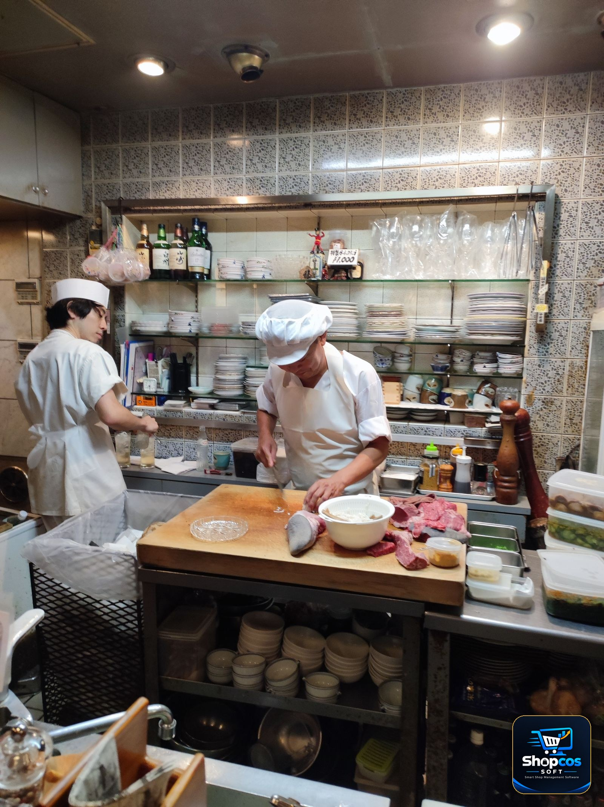

Walk into any busy restaurant in Lahore, Karachi or Faisalabad on a Friday night and watch the counter for ten minutes. A waiter shouts an order toward the kitchen. A family at table 7 asks for two more naan and one extra karahi — after their bill is already half-made. Two tables ask to be joined because a baraat party just grew by six people. A customer at the till wants to pay half by JazzCash and half in cash. And somewhere in the middle of all this, the owner wants to know: how much did we actually sell today, and which waiter sold it?
That is the real job of restaurant billing software. It is not the same job as a kiryana shop's billing software, and it is not the same job as a clothing store's. A retail bill is finished in thirty seconds at the counter. A restaurant bill lives for an hour, changes four times, passes through three people's hands, and only gets paid at the very end. Buy software that was built for a retail counter and you will feel the difference every single night — in wrong orders, slow tables, and a day-end total that never quite matches the cash in the drawer.
This guide is written for the restaurant owner who is about to buy: the dhaaba owner with eight tables, the fast-food counter doing takeaway and dine-in, the desi restaurant with a tandoor and a BBQ section, the family restaurant that fills up on weekends. No jargon, no sales talk — just the checklist to run before you pay, and the honest maths of what it costs over three years.
Why a Restaurant Bill Is Not a Retail Bill
The difference is not the food. It is the shape of the sale. In a retail shop, the customer picks items, pays, and leaves. In a restaurant, the sale is a process with five stages, and the software has to handle all five without the staff fighting it:
- The table opens, not the bill. A table's order stays open while the customers eat. Dishes are added in rounds — starters first, then the main course, then dessert, then "one more chai." A system that forces you to close and re-open a bill for every round is a system your waiters will quietly stop using.
- The order travels to the kitchen, not the counter. The waiter takes the order at the table, but the kitchen has to see it — with the right items, the right table number, and notes like "no mirch" or "extra spicy." On paper this is the KOT, the kitchen order ticket. In software it should be a printed ticket or a kitchen screen, sent the moment the waiter confirms the order.
- The bill is paid at the end, by someone else. The waiter who served the table is often not the person who takes the money. The cashier at the till needs to see the table's full running order, apply the discount the owner promised, add the service charge, and take the payment — cash, card, JazzCash, Easypaisa, or a mix of two.
- The same table can be two bills — or two tables can be one. Two families share a table and want separate bills. A party of twelve takes three tables and wants one bill. Both happen every week in a Pakistani restaurant, and both must be one tap, not a phone call to the software company.
- The day does not end at the till. At closing, the owner needs the day's sale by waiter, by table, by dish — which dish sold most, which waiter sold most, how much cash vs online payment came in. A restaurant that cannot answer those questions is guessing about its own business.
Judge every software demo against those five stages. If the salesman only shows you a fast billing screen, he is showing you a retail system with a restaurant label on it. Ask him to open a table, add a round, send a KOT to the kitchen, split the bill, and close the day — in that order, without leaving the demo. Our guide on how to choose POS software in Pakistan covers the general questions; this article covers the restaurant-specific ones.
The 10-Point Checklist Before You Buy
Run this list against any software you are considering. A "no" on items 1–5 is a reason to walk away; a "no" on items 6–10 is a reason to negotiate or look elsewhere.
1. Table management with a floor map
You should see your dining hall on screen — table 1 to table 12, the family hall, the terrace — with each table showing free, occupied, or bill-printed at a glance. The waiter taps a table and its running order opens. If the system has no table view, it is not restaurant software.
2. KOT printing and a kitchen display
When the waiter confirms an order, a ticket must print in the kitchen — or appear on a kitchen screen — with the table number, items, quantities and special notes. Bonus points if the BBQ section and the tandoor get separate tickets, because a karahi order and a naan order do not go to the same person.
3. Waiter logins and PINs
Every waiter should have his own login or PIN, so every order is stamped with who took it. This is how you settle the two oldest arguments in a restaurant: "whose order was this?" and "whose sale was this?" It is also how you spot the waiter whose tables keep coming back with wrong bills.
4. Split bill and merge table
Split one table's bill by seat, by item, or half-and-half — and merge two tables into one bill when a party spreads out. Test both in the demo with real dishes, not with a two-item sample order. Friday night will test them for you if the demo does not.
5. Works 100% offline
Load shedding is not a rare event in Pakistan; it is the schedule. The billing must keep running when the internet dies — and when the power dies, on a UPS or laptop battery. Orders, KOTs and the day's totals cannot wait for the Wi-Fi to come back. Our comparison of offline vs online billing software explains why this is the single most expensive feature to get wrong.
6. Service charge, GST and discounts on the bill
The bill must show service charge, GST where it applies, and discounts — clearly, on the printed bill, with the maths the customer can follow. A discount the customer cannot see on the bill is a discount the customer will argue about at the till.
7. Takeaway and delivery alongside dine-in
Most Pakistani restaurants now run all three: dine-in, takeaway, and delivery through a rider or an app. The software should keep the three separate in the day's report — a takeaway order must never sit on a dining table, and a delivery order needs the customer's phone number and address on the ticket.
8. Raw-material stock, not just dish stock
A restaurant does not sell "chicken karahi" from a shelf; it cooks it from chicken, oil, tomatoes and masala. Good restaurant software tracks the raw material: when chicken runs low, the system should warn you before the dinner rush, not after. If it only tracks finished dishes, you will still run out of chicken on Saturday night.
9. Urdu interface your staff can actually read
Your waiters and cashier are not IT graduates. The buttons, the dish names, the bill — all of it should be readable in Urdu by the people who work your floor. English-only software ends up being used by one person: you. Everyone else goes back to paper.
10. Day closing that matches the cash drawer
At the end of the night, the software's total must match the cash in the drawer plus the online payments — waiter by waiter, payment method by payment method. If the day-end report takes twenty minutes to reconcile, the system is costing you sleep every single night. Our guide on the day-closing habit shows the five-minute routine that keeps this honest.
The number to remember: a restaurant that loses just two orders a night to wrong bills, missed KOTs or tables billed twice — say Rs 1,500 a night — loses Rs 45,000 a month. That is Rs 540,000 a year, quietly, without a single customer complaining loudly enough for you to notice. The software does not have to be perfect to pay for itself; it only has to stop the leak.
Tables, KOTs and the Kitchen: How Orders Actually Flow
Here is the flow a good system makes boring — and a bad system makes painful:
- The waiter opens the table. The customer sits; the waiter taps table 7 on his screen or at the till, and the table turns "occupied." Everything from now on belongs to table 7.
- Round one goes to the kitchen. Two chicken karahi, four naan, one raita. The waiter confirms; a KOT prints in the kitchen with "TABLE 7" at the top. The kitchen starts cooking. No shouting across the hall, no paper chit that gets lost under a plate.
- Round two is added, not re-billed. "One more karahi, two cold drinks." The waiter adds it to the same running order. A second KOT prints — the kitchen sees only the new items, so nothing gets cooked twice.
- The bill is called up at the till. The customer asks for the bill. The cashier opens table 7 and sees everything: both rounds, the drinks, the service charge, the discount the owner approved. One print, one total, no re-adding by hand.
- Payment, then the table frees up. Cash, card, JazzCash — or half cash, half online. The payment is recorded against table 7 and the waiter who served it. The table turns green again, ready for the next family.
Two details separate the systems that survive a busy night from the ones that don't. First, the KOT must carry the table number in big print — a kitchen that has to guess which table an order belongs to will send the karahi to the wrong family. Second, the waiter must be able to add a round from the floor, on a phone or a small tablet, instead of walking back to the till every time. The walk to the till is the slowest part of the whole flow, and on a full night it is the difference between a table that turns over twice and a table that turns over once.

Waiters, Cashiers and the Till: Who Can Do What
A restaurant has three jobs at the counter, and they belong to three different people. The software should enforce that, because the day it doesn't is the day money starts disappearing:
| Person | Should be able to | Should NOT be able to |
|---|---|---|
| Waiter | Open tables, take orders, send KOTs, add rounds, see his own tables | Give discounts, void bills, see other waiters' sales, touch the cash drawer |
| Cashier | Call up any table, apply approved discounts, take payment, print bills, close the day | Change dish prices, delete a paid bill, edit another cashier's shift |
| Owner / manager | Everything — prices, discounts, reports, voiding a bill with a reason recorded | Nothing is blocked; but every void and discount he makes should be logged, so the record stays honest even for the boss |
The rule is simple: a discount or a voided bill should need the owner's PIN or approval. In restaurants without this rule, the most common leak is not theft of cash — it is the "friendly discount" a waiter gives his friends, and the voided bill that was actually paid in cash. A system that logs every void with a reason and a name ends that leak in a week, because everyone knows the record exists. This is the same discipline that stops staff theft in retail shops — only in a restaurant the till is busier and the excuses are better.
Split Bills, Merged Tables and Discounts — the Friday-Night Test
Before you buy, run this exact test in the demo. It takes five minutes and it will tell you more than an hour of sales talk:
- Open table 5. Add two karahi, four naan, two cold drinks and one dessert.
- Add a second round: one BBQ platter and two more naan.
- Now split the bill: the karahi and naan on one bill, the BBQ and drinks on another.
- Merge table 5 with table 6 into a single bill.
- Apply a 10% discount, add the service charge, and take half the payment in cash and half by JazzCash.
- Print both bills and close the day.
If the salesman hesitates at any step, or says "that part comes in the next version," believe him — and then buy the software that already does it. Every one of those six steps happens in a real Pakistani restaurant in a normal week. The split-bill step alone happens almost daily: two families share a table at a wedding dinner, colleagues split a lunch, a regular customer says "mera hisab alag kar dein." A system that cannot split a bill cleanly will cost you the customer standing at the till, because nothing embarrasses a restaurant more than a ten-minute argument over who ate what.
One more thing to check in the same demo: the printed bill. It should show your restaurant's name, the table number, every item with its price, the discount, the service charge, and the final total — in print big enough for a customer to read without glasses. A bill the customer cannot read is a bill the customer will not trust, and a customer who does not trust the bill does not come back.
What Restaurant Billing Software Costs in Pakistan — the Honest 3-Year Maths
Restaurant software in Pakistan is sold two ways, and the cheaper-looking one is usually the expensive one. Here is the maths, done the way a shopkeeper does it — over three years, because that is how long you will actually use the system:
| Model | What you pay | 3-year total | What happens if you stop paying |
|---|---|---|---|
| Monthly subscription | Rs 2,500–4,000 / month | Rs 90,000–144,000 | The software stops opening — your tables, rates and history are locked until you pay again |
| One-time licence (e.g. shopcos soft) | Rs 40,000 once | Rs 40,000 | Nothing — it keeps running, your data stays yours |
At Rs 3,000 a month — a very common restaurant subscription price — you pay Rs 36,000 in the first year alone, and Rs 108,000 in three years. The one-time licence costs less than fourteen months of that subscription, and after that you are running free. The difference, Rs 68,000, is a new deep freezer, a month of chicken, or two months of a waiter's salary. Our full comparison of monthly subscription vs one-time payment works out the same maths for retail shops, with the hidden costs subscriptions rarely mention: the per-branch fee when you open a second outlet, the per-waiter fee when your staff grows, and the price rise in year two that was never in the first quote.
Ask three questions about any price you are quoted, before you sign anything:
- Is the price per restaurant or per branch? A second branch should not double your bill.
- Is there a per-waiter or per-user charge? A restaurant with six waiters should not pay six times.
- What is included — and what is extra? KOT printing, kitchen display, SMS or WhatsApp bills, and support should be in the price, not sold back to you one by one. And ask what happens to your data if the company closes or you stop paying: the honest answer is "it stays on your own computer and keeps opening."
One honest note: a free trial is not a sales trick; it is the only fair way to buy. A 7-day free trial with your real menu, your real tables and your real waiters will tell you in one busy weekend whether the system survives your restaurant. If a seller will not give you a trial, he is telling you something about his own confidence in the product.
5 Mistakes Restaurant Owners Make When They Switch
1. Buying a retail POS and calling it restaurant software
The most expensive mistake on this list. A retail system bills fast at a counter — and that is all it does. No tables, no KOTs, no split bills. Within a month the waiters are back to paper chits, the kitchen is back to shouting, and the software is an expensive receipt printer. If the demo has no table view, it is not restaurant software, whatever the brochure says.
2. Typing the menu from memory
Dish names, prices, and which section each dish goes to (BBQ, karahi, tandoor, drinks) — all of it must come from your printed menu, not from memory. A karahi priced at Rs 1,200 in the system and Rs 1,400 on the menu will cause an argument at the till every single night until someone fixes it. Take an hour, sit with the menu, and enter it once, properly.
3. Training only the cashier
The cashier learns the system in a day. The waiters are the ones who live in it — and if they were never trained, they will avoid it, write paper chits, and hand the cashier a mess to type in at the end. Train every waiter on one thing only: open the table, add the order, send the KOT. Fifteen minutes each, on a quiet afternoon, before the first live night.
4. Going live on a Friday night
Never switch systems on your busiest night. Go live on a slow Tuesday lunch, with the paper chits still running beside the software for the first three days. When the software's day total matches the paper total three days in a row, retire the paper. Our guide on training staff on billing software in one day lays out exactly this kind of low-risk switch.
5. No backup on day one
Your menu, your rates, your tables, your waiters' logins, your sales history — all of it lives in the software from the first day. Check on the first evening that a backup exists and that you know where it is. A restaurant with no backup is one hard-drive failure away from retyping its entire menu from scratch, in the middle of a dinner rush.
The Bottom Line
Good food brings a customer in once. A smooth bill brings him back. Nobody remembers the karahi that arrived two minutes late; everybody remembers the bill that took twenty minutes, the dish that was charged twice, or the waiter who argued about a discount at the till. Restaurant billing software is not about the till — it is about the last five minutes of the customer's visit, which is the part he remembers on the drive home.
So run the checklist, run the Friday-night test, and do the three-year maths before you pay. The right system is the one your waiters can use without thinking, your kitchen can read without guessing, and your cashier can close without arguing — offline, in Urdu, with your data on your own machine.
If you are ready to test one, do the small version this week:
- Write down your ten most-sold dishes with their exact prices, and which kitchen section each one goes to.
- Count your tables and name them the way your waiters already do — "family hall 3," "terrace 2," not "T-07."
- Try a restaurant billing system free for 7 days, with your real menu and your real tables, on a slow lunch service first.
- Run the Friday-night test in the trial: split a bill, merge two tables, take half cash and half JazzCash.
- If the day total matches the cash drawer three days in a row, you have found your system.
That is the whole decision. One trial weekend, one honest maths check, and a billing system that stops losing you two orders a night.
Photo credits: Professional waiter serving drinks in a restaurant photo by Andrea Piacquadio · Two chefs preparing food in a restaurant kitchen photo by 神尾之風 · Senior couple paying at a restaurant with a waiter holding a terminal photo by Yan Krukau — all via Pexels.